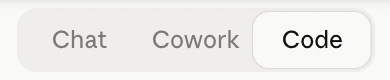
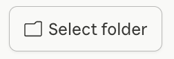
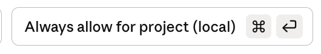
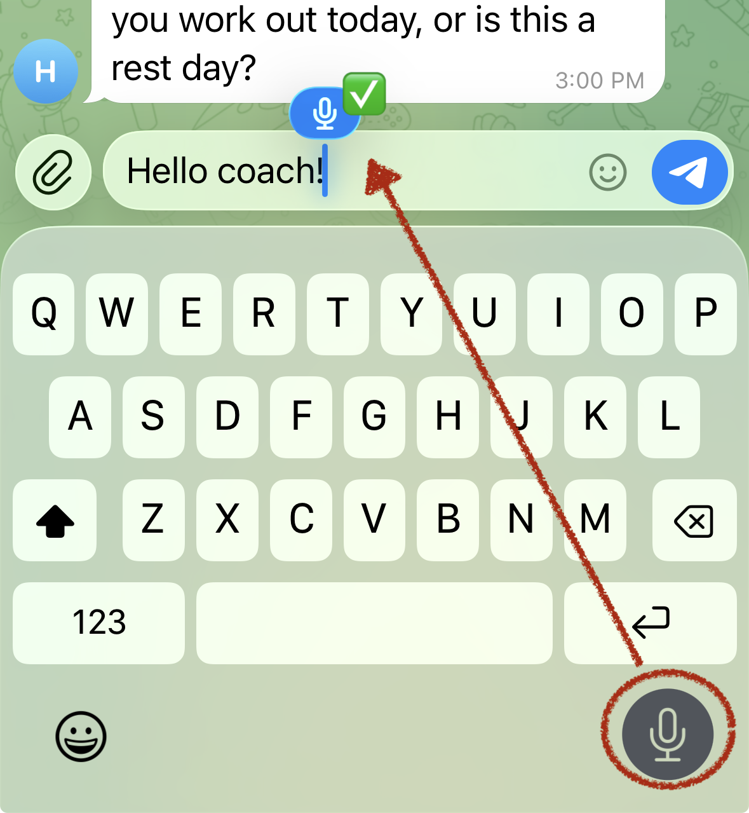

🌿
HealthOS Setup Guide
Your personal AI health coach — up and running in about 30–45 minutes.
⏱ About 30-45 minutes | No technical experience needed
To keep your private data completely confidential, we need your help during the install.
🔒 Your Data is Private & Protected
☁️
AWS (Your Server)
Your health data lives in your own private AWS account — not ours. Only you have access to it.
💬
Telegram
Messages between you and your bot are private to your account. Telegram does not sell your data.
🤖
Anthropic (Claude AI)
Conversations are processed by Anthropic's API under their privacy policy. API usage is not used to train models by default.
🌿
HealthOS / Yost AI
We never see your health data. Your server, your credentials, your data — we only provide the software.
Each platform above maintains its own privacy policy, which may change over time. It is your responsibility to review the current privacy practices of AWS, Telegram, and Anthropic before entrusting them with your personal data. Links to their policies are available on each platform's website.
👍🏻You do this — a quick action on your end
❌AI Guided — Claude handles it automatically
| Item |
Notes |
Who |
| HealthOS app link |
A private link to the HealthOS software — sent to you in your setup instructions email. Have it ready before you start. |
👍🏻 |
| Telegram Messenger App |
Free — install on your phone or desktop before starting |
👍🏻 |
| Claude desktop app |
Free download from claude.ai — Step 2 below walks you through it |
👍🏻 |
| Credit card for Anthropic Claude |
$5 one time to start, then approx $1–5/mth — Step 3 walks you through it |
👍🏻 |
| Anthropic API key |
Step 3 walks you through it |
👍🏻 |
| Credit card for AWS |
Required to create an account — your first 3 months are completely free, then $7/mth |
👍🏻 |
| AWS account |
Claude will walk you through creating one step by step |
❌ |
| Your cloud server |
Claude creates, configures, and secures it automatically |
❌ |
| HealthOS bot |
Claude sets it up and launches it — you'll just name it |
❌ |
Everything marked ❌ happens automatically. You'll watch it happen — no action needed.
1
Download the HealthOS Installer
👍🏻 You do this
Follow the instructions in your purchase email from yostadvantage.com to download the installation program.
- Open your Downloads folder — you should see either a folder called healthos-installer, or a file called healthos-installer.zip
- If you see the .zip file, double-click it to unzip — the folder will appear
- If you already see the folder, you're all set — Mac unzipped it automatically
Haven't downloaded yet? Go to the download page — you will need the code from your purchase email.
✋ Pause here. Make sure the healthos-installer folder is in your Downloads folder before moving on.
2
Install the Claude Desktop App
👍🏻 You do this
HealthOS is installed by Claude — the AI assistant. You'll need the desktop app (not just the website).
Already have Claude? Make sure it's up to date — open it and check for any update prompts. Skip to Step 3.
- Go to claude.ai and click Download
- Open the downloaded file and follow the install steps
- Open Claude — you should see three tabs at the top: Chat, Cowork, Code or

— you'll be using the Code tab
3
Get Your Anthropic API Key
👍🏻 You do this
This gives HealthOS access to Claude's AI. You'll add billing first, then create your key.
- Go to https://console.anthropic.com and sign up or log in
- Add billing — look for any of these:
- "Begin building with Claude for only $5" — button in the middle of the screen
- Billing in the left sidebar
- Click your name in the bottom right → Settings
- Add your payment info and purchase $5 in credits
- Enable Auto Reload so your health coach never runs out of credits:
- Click your account name in the bottom left → Organization Settings → Billing
- If it says "Auto reload is disabled" next to your balance, click Edit
- Turn on Auto Reload Credits
- Keep $5 under "When credit balance reaches:" and $15 under "Bring credit balance back up to:" — these are the minimums and will last several months
- Click Update and Purchase
- Click Create API Key — give it any name (e.g., "HealthOS")
- Copy the key — it looks like:
sk-ant-api03-...
⚠️ You only get one chance to copy this key. Once you close or navigate away from the page, it's gone — Anthropic will never show it again. Paste it into your Notes app or somewhere safe right now before moving on.
- Paste the key somewhere safe (Notes app, etc.) — you'll need it in a few minutes
✋ Don't skip billing. The API key won't work without credits — your health coach will fail to start if this step is skipped.
4
Install Telegram
👍🏻 You do this
HealthOS sends your daily health check-ins through Telegram. It's free and takes 2 minutes to set up.
- Download Telegram from the App Store (iPhone) or Google Play (Android) — or at telegram.org for desktop
- Create an account with your phone number
- That's it — Claude will help you set up the bot inside Telegram during the install
5
Open the Installer Folder in Claude
👍🏻 You do this
- Open the Claude desktop app
- Click the Code tab at the top of the window or
- At the bottom of the Claude window, click "Ask Permissions" . Select BYPASS PERMISSIONS — a confirmation dialog will appear, click "Enable bypass mode" to continue. This lets Claude work without asking for approval on every step.
- Click "Select folder"

- Navigate to your Downloads folder and select the healthos-installer folder you unzipped in Step 1
- Click Open
- A "Trust this workspace?" dialog may appear — either now or when you send your first message in Step 6. If it does, click Trust Workspace
You should see the project name appear in Claude's window. You're in the right place.
6
Tell Claude to Install Your Coach!
👍🏻 You do this
In the Claude chat box at the bottom, type:
Hi, Claude! Please run the install file
Then press Enter.
⏳ Claude is now in charge. It will introduce itself and ask you a few questions before doing anything on AWS. Answer each question and press Enter — Claude will tell you exactly what to type.
From here, Claude drives the install. You'll be asked to do a few short tasks along the way. Here's what to expect — in order.
Heads up — permission prompts: As Claude runs commands, it may ask for your permission. If you see a prompt, click
"Always allow for project (local)" 
so it can work without interruption. And if you haven't already, make sure
"Ask Permissions" is set to
Bypass Permissions at the bottom of the Claude window.
Phase A — Claude Asks You Questions
Claude will ask for your health coach project name (you can use the default it suggests) and your Anthropic API key (from Step 3). Answer each question and press Enter.
⏱ About 2 minutes of back-and-forth
Your job: Answer Claude's questions. Have your Anthropic API key (from Step 3) ready to paste.
Phase B — Create Your AWS Account (skip if you already have one)
AWS is the cloud platform where your HealthOS server will live. Claude will give you exact step-by-step instructions to create a free account — you just follow along on the AWS website.
⏱ About 5 minutes | Your first 3 months are free
Your job: Follow Claude's instructions on aws.amazon.com. When you're done, tell Claude "AWS account ready."
Phase C — Create an AWS Access Key
This gives Claude permission to set up your server. Claude will tell you exactly where to click inside your AWS account. You'll copy two values and run one command in your Mac terminal.
⏱ About 3 minutes
Your job: Follow Claude's instructions. It will tell you what to copy and paste — nothing to figure out on your own.
Phase D — Claude Builds Your Server ❌
Claude creates your cloud server, assigns it a permanent address, and configures the firewall. Nothing to do here — just watch.
⏱ About 3–5 minutes
✅ Sit back. Claude is working. You'll see progress messages appear.
Phase E — Set Up Your Telegram Bot
Claude walks you through creating a personal Telegram bot — this is the account where your health coach will check in with you every day. It only takes a few taps in Telegram.
⏱ About 5 minutes
Your job: Follow Claude's step-by-step instructions in Telegram. When you have a bot token (a long code), paste it into Claude.
Phase F — Claude Installs Everything ❌
Claude loads HealthOS onto your server, writes your credentials, installs all software, reboots the server (that's normal), and launches the bot as a background service.
⏱ About 15 minutes — the longest phase
✅ Sit back. Claude is doing all the work. You may see a lot of text scrolling — that's normal.
Phase G — Verify Everything ❌
Claude runs a final check on your server and sends a test message to your Telegram group.
⏱ About 1 minute
Your job: Check your Telegram — you should see a test message arrive from your new bot. Tell Claude "test message received" and you're done.
Phase H — Meet Your Health Coach
Claude will instruct you to run a setup in Terminal when you're ready. This is your health coach interview — Your health coach will ask you questions to personalize HealthOS to your goals, habits, and preferences. Take your time and answer naturally.
⏱ About 10–15 minutes
Your job: Answer Claude's questions. You can type your answers — or
use talk-to-text on your phone keyboard. Use the
microphone at the bottom of the keyboard (not the mic icon inside the text box — that one records your voice instead of transcribing it).

🎉
HealthOS Is Live!
Your personal health coach is running 24/7 in the cloud.
Your coach will check in with you inside Telegram several times over each day to keep you progressing toward your health goals.
Monthly cost after your free period: ~$7 per month
📋 Terms of Use — Reminder
By signing up for HealthOS, you agreed to the Yost AI Terms of Service. This is a friendly reminder of the key points.
Your responsibility: HealthOS is a personal wellness tool designed to help you track habits and stay consistent. It is not a medical device and does not provide medical advice, diagnosis, or treatment. Please do not use it as a substitute for professional medical care. Always check with a medical professional before changing your health programs in any way.
Your data: The information you share with HealthOS lives on your own private server. You own it. We don't access it, sell it, or share it. You are responsible for protecting your data with full knowledge of the privacy protocols of AWS, Telegram, and Anthropic/Claude.
Limitation of liability: HealthOS software is provided as-is. Yost AI is not liable for decisions made based on information provided by the system. Use good judgment — and when in doubt, talk to a doctor.
Questions about the terms? Reply to your welcome email and we'll be happy to help.
HealthOS by Yost AI | Questions? Reply to your setup email.
Installer v0.4.14 | HealthOS Coach © Yost AI. All rights reserved.